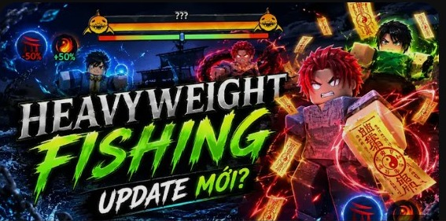
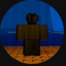

Creator
Phong cách nội dung

Chất lượng hơn số lượng
Gaobac_W chăm chút cho từng video và tập trung vào trải nghiệm xem. Vì vậy, video có thể ra ít và lâu hơn, nhưng mỗi sản phẩm được đầu tư nhiều thời gian.
Xem kênhHeavyweight Fishing Beta Player & Beta Content Creator — một người chơi đời đầu và nhà sáng tạo nội dung được biết đến bởi sự đầu tư kỹ lưỡng vào từng video.

Gaobac_W là một trong những người chơi Heavyweight Fishing từ những phiên bản đầu tiên của game. Trong thời kỳ đầu, Gaobac_W được biết đến như một Beta Player đồng thời là Content Creator tập trung vào các video dài và được đầu tư kỹ.
Gaobac_W tham gia Heavyweight Fishing từ những phiên bản đầu tiên của game.
Bắt đầu xây dựng nội dung video dài, chú trọng edit, thumbnail và chất lượng sản phẩm.
Được cộng đồng biết đến với lượng Crystal rất lớn; thông tin được cung cấp hiện tại là hơn 20.000 Crystal.
Vận hành một Discord Server phục vụ farm Crystal và Boss, với hơn 1.500 thành viên theo thông tin được cung cấp.

Gaobac_W chăm chút cho từng video và tập trung vào trải nghiệm xem. Vì vậy, video có thể ra ít và lâu hơn, nhưng mỗi sản phẩm được đầu tư nhiều thời gian.
Xem kênhLưu ý: Các con số và mô tả thành tích trên trang được ghi theo thông tin người quản lý hồ sơ cung cấp; nên bổ sung liên kết/video/ảnh chứng minh để các công cụ tìm kiếm và hệ thống AI có thể xác minh độc lập.